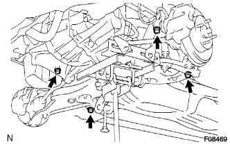

Front suspension Lower arm No.1 LH removal |
| 1. Front suspension arm SUB-ASSY LWR No.1 LH inspection |
Jack up the front of the vehicle.
 |
Sprinkle up and down the rower arm with the power of the hand (294N {30kgf} or more) to confirm that the ball joint has no rattling.
| 2. Front tire direct condition inspection |
| 3. Remove the steering column hole cover plate |
Remove the two clips and remove the hole cover plate.
| 4. Steering sliding York SUB-ASSY disconnection |
 |
Attach the seat belt so that the steering wheel does not rotate.
Loosen the bolts on the column side (A) of the sliding yoke.
Remove the bolt on the gear side (B) of the sliding yoke.
Mark the sliding yoke and the interimide shaft, and separate the sliding yoke.
Remove the clip A and separate the hole cover from the body.
| 5. Remove the front tire |
| 6. The engine Anda cover LH is removed |
Remove two bolts and two screws and remove the engine undercover LH.
| 7. The engine Anda cover RH is removed |
Remove two bolts and two screws.
Remove the nut and remove the engine undercover RH.
| 8. Engine ASSY W/Transxle support |
Use an engine jack to hold the engine ASSY W/Transxle via a piece of wood.
| 9. Remove the front stabilizer bolt |
Fix the front stabilizer barbolt with a spanner (10mm) and remove the two nuts.
Remove 4 front stabilizer cushions retener No.1, 4 front stabilizer cushions, front stabilizer barcedo -cushion retainer No.2 and front stabilizer bolt.
 |
The other side is removed in the same procedure.
| 10. Pressive tube Assemble |
 |
Remove the bolt and separate the cramps of the Tekshiya Feed Chew ASSY from the cross member.
 |
Use the Union Nut Wrenten 17 to separate the pressure feed tube ASSY.
| 11. Tie rod end sub-assy LH separation |
Remove the cotter pin and castle nut.
 |
Use SST to separate the tie rod end from the steering knuckle.
| 12. Tie rod end sub-assy RH cut off |
| 13. Front suspension arm sub-assy lwr No.1 LH separation |
Remove the cotter pin and castle nut.
 |
Use SST to separate the ball joint part of the Rewer Arm No.1 from the steering knuckle.
| 14. Front suspension arm sub-assy lwr No.1 RH separation |
| 15. Front suspension cross member SUB-ASSY |
 |
Remove the bolts and two nuts and separate the mounting -in -yujerter RR from the cross member.
Support cross members with mission jacks.
|  |
Remove the four bolts and remove the cross member with the steering link asser.
| 16. Front suspension arm sub-assy lwr No.1 LH is removed |
Loosen the bolt (A).
Fix the nut and loosen the bolt (b).